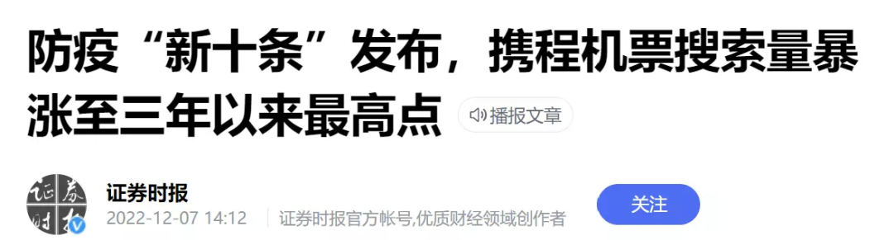
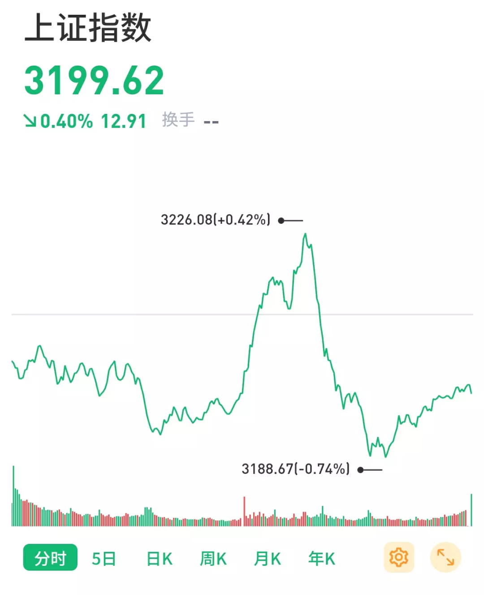
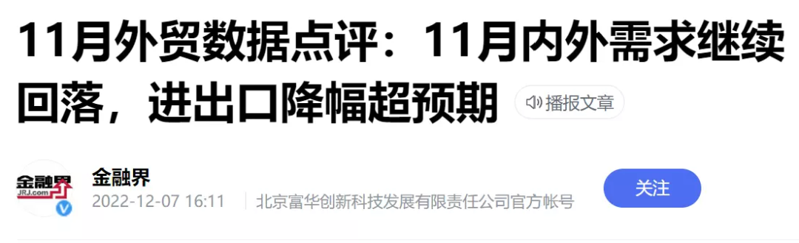
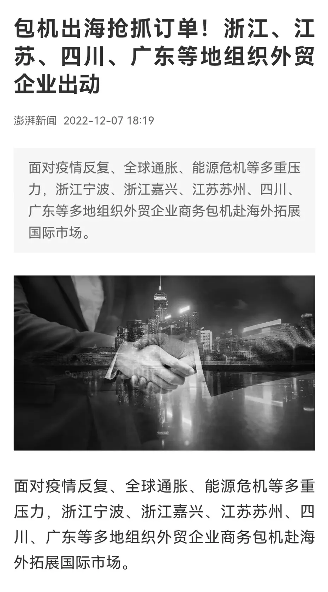
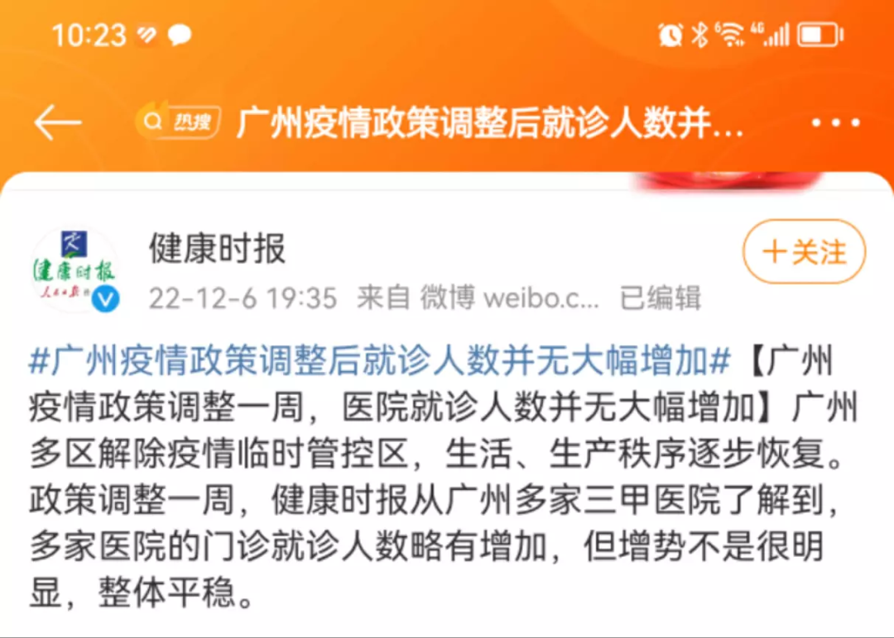

利好落地
V姐万事屋 V姐来了[V姐来了](http://weixin.qq.com/r/SDmHg1bExZ65KRLgb2zM)
| 微信号 | Vjielaile |
| 功能介绍 | 一起来把想要的生活收入囊中。 |
2022-12-07 22:21
原文链接(长) 原文链接(短)
Hi， 我是V姐。
今天有两件大事跟大家有关。
**一、防疫优化新十条发布。**
**二、中央政治局会议通稿发布。**
先看新十条，跟之前相比，主要有2点变化最大：
1、跨地区流动人员不再查核酸和 **健康码**，不再落地检。
2、具备居家隔离条件的无症状感染者和轻型病例一般采取 **居家隔离**，也可自愿选择集中隔离收治。
也就是说人员基本可以自由流动了，阳性也不用拉走了，这下属实真正的“共存”了。
携程机票量今天暴涨至3年最高点。

新十条出来后，上证指数直线拉升，然后下午又迅速回落。

前期一片悲观的时候，出来利好，市场往往跟打了鸡血一样下注。
现在关于放开的靴子已经基本落地，力度比想的大，速度比想的快，所以后面这个预期没什么可炒的了。
后面市场下注，要基于经济实际的复苏情况。
**短期主要是看医疗状况，社会秩序能否平稳过渡；**
**中期看经济数据是不是能好转。**
比如今天的回落，就是被下午公布的11月对外贸易数据拉下来的。

经济目前肯定是不咋地的，好消息是一些地方已经开始行动了，我还是愿意相信中国经济的韧性。

官方和民间都在行动。
今天的政治局会议，跟7月份的相比，主题和基调都有所改变。
主题从【防疫】转为 **【发展】**。
关于防疫的描述大幅减少。
表述也从【坚持动态清零】变成【 **更好统筹疫情防控和经济社会发展**】。
7月的通稿没有提及增长，只说稳就业稳物价，力争最好结果。
12月的通稿，要求【推动经济运行整体好转， **实现质的有效提升和量的合理增长**】。
合理增长是多少？
参考今年3月两会的目标，是5.5%，还是基于21年的高基数。现在基于今年的基数，明年至少要有5.5%才算合理。
另外这次通稿通篇没有提房子。
7月的原话是【要稳定房地产市场， **坚持房子是用来住的、不是用来炒的定位**，因城施策用足用好政策工具箱，支持刚性和改善性住房需求，压实地方政府责任，保交楼、稳民生】。
这个里面就有2种理解方式：
一种是政府不再提房住不炒，是基于现在经济下行压力实在大，楼市再不行，上下游影响太大了，后续会继续出台针对性的货币政策来帮助楼市回暖。
另外一种就是金融十六条，救房企三支箭已经应出尽出，目前不提楼市，是需要观望一下效果，不再出新政刺激，防止油门踩到过热。
以上两种，无论哪一种，楼市预期最坏的时候基本过去了。
如果是刚需，或者一线城市的朋友，可以考虑房子看起来。
另外呢，大家关心的【 **货币财政**】基调也有所改变。
虽然整体上仍然是【继续实施积极的财政政策和稳健的货币政策】。
但是货币政策从表述看，会有一定程度的收紧，上一次是说【要灵活适度】。
这次变成了【稳健的货币政策 **要精准有力**】，而且删除了【要保持流动性合理充裕】。
意思是不会大水灌满，还是会针对特定行业去给钱。
财政上依然积极，提出【 **积极的财政政策要加力提效**】，意思是钱给到位，还要加快落地，产生实际GDP，不要跟那玩左手倒右手的游戏，没错，说的就是城投。
这次还进一步突出了安全需求，上来强调所有政策的基调是【 **更好地统筹发展和安全**】，细化是【产业政策要发展和安全并举，科技政策要聚焦自强自立】。
所以自主可控相关板块接着奏乐接着舞，明年还会被反复炒。
政治局会议基本给明年上半年定了调，还有一些不明确的政策，比如关于房子，我们等本月的中央经济会议再看。
落地的细则呢，就是3月的两会。
以上这几个会，基本能帮助大家及时看到风向的变化。
* * *
最近这几天，我各个群的朋友都在讨论放开后的准备工作。
大部分群的朋友，都是这样的：
只有广州的朋友，他们在讨论煲汤方子。
这轮广州的疫情，官方的数据是16万感染，4例重症，0死亡。
放开后，医院就诊也没有受到冲击：

有没有广州的朋友留言说一说，你们是怎么做到的？
你们跟河北朋友是真的体质差别吗？
如果广州这个情况确实如此，那么总有可以借鉴的地方，对于放开后的情况，或许可以再乐观一些。
欢迎广州朋友给我留言说说看